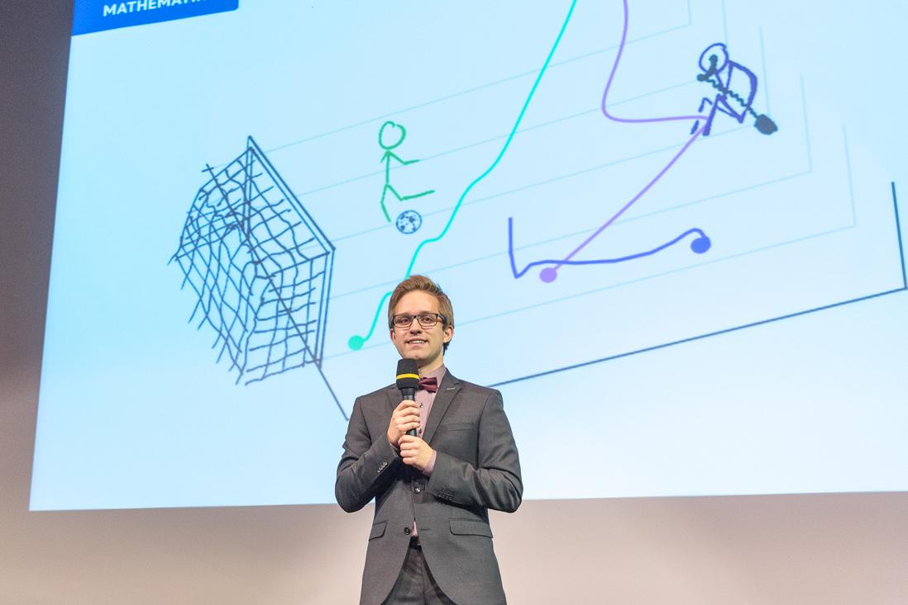

| 09/2025 | Modeling the Directionality of Cell Migration in Epithelial-to-Mesenchymal Transitions with Non-Smooth Dynamical Systems | NCTS Webinar on Nonlinear Evolutionary Dynamics |
| 07/2025 | Position-based Dynamics for Multicellular Systems with Adhesion Memory | ACMB-JSMB 2025 (Kyoto) |
| 01/2025 | Emergence of digit-like structures through mechanical instabilities: A hybrid computational and experimental study | ASHBi Retreat 2025 (Shiga) |
| 09/2024 | 200 years old and still relevant: The Gauss-Seidel principle | Lab Summer Conference 2024 (Kyoto) |
| 09/2024 | Modelling heterogeneity of EMT to identify main drivers of basal extrusion | The 1st ASHBi-KAIST Joint Workshop (Kyoto) |
| 07/2024 | Agent-based modelling of heterogeneous EMT scenarios | Annual Meeting ESMTB (Toledo) |
| 07/2024 | A live coding music performance with Julia (Video) | JuliaCon 2024 (Eindhoven) |
| 07/2024 | Tools for agent-based modelling in developmental biology (Video) | JuliaCon 2024 (Eindhoven) |
| 07/2024 | Position-based dynamics as a numerical tool for agent-based cell migration models of dense populations | KSMB-SMB 2024 (SEOUL) |
| 03/2024 | Position-based dynamics: Convergence theory andapplications to agent-based models | PDE seminar (Vienna) |
| 03/2024 | Towards kinetic theory for multi-scale muscle models | Inria (Paris) |
| 08/2023 | Convergence of position based dynamics for first-order particle systems with volume exclusion | ICIAM 2023 (Tokyo) |
| 12/2022 | Testing in scientific computing | Vienna |
| 12/2022 | A short introduction to git | Vienna |
| 11/2021 | Position-based dynamics for ODEs with inequality constraints | PDE afternoon (Vienna) |
| 05/2020 | Partially kinetic systems (aka 'particles on rails') | Kinetic Theory Coffee Break (online) |
| 06/2019 | Short introduction to finite element exterior calculus | PhD seminar (Kaiserslautern) |
| 03/2019 | Partially mesoscopic and Lagrangian systems | DESCRIPTOR (Paderborn) |
| 02/2019 | Lagrangian perspective on skeletal muscle models | GAMM, 90th Annual Meeting (Vienna) |
| 10/2018 | Fiber based muscle simulation (master's thesis) | Hausdorff Center of Mathematics (Bonn) |
| 07/2018 | Tangent spaces | Student-Talk (Kaiserslautern) |
| 06/2018 | Simulation of skeletal muscle tissue with fiber-based dynamics | Applied Math Seminar (Kaiserslautern) |
| 05/2018 | Parameter identification in ODE models | The University of Auckland |
| 04/2018 | Symplectic numerical integration | PhD seminar (Auckland) |
| 09/2017 | Symplectic molecular dynamics | 19th ÖMG Meeting and Annual DMV Meeting (Salzburg) |
| 01/2017 | Optimization of B-Spline Parametrizations using G+SMo and IPOPT | G+SMo Developer Days (TU Delft) |
I organised (together with others) various events during my time as speaker of the Vienna School of Mathematics (VSM) and earlier as member of the student council at TU Kaiserslautern.
| 2023 | Workshop: Development across Scale 2023 (two days) | |
| 2022 | VSM Mini-Course on String Theory by Pavel Safronov (one week) | |
| 2021 | VSM workshop: A PhD in mathematics – career possibilities & gender aspects (one day) | |
| 2017 – 2019 | Student Talks (initiator of series of extracurricular talks at TU Kaiserslautern) |
I am currently making various tools for agent-based modelling available as Julia packages.
| 22/5/2022 | Lange Nacht der Wissenschaft (long night of science) | Vienna |
